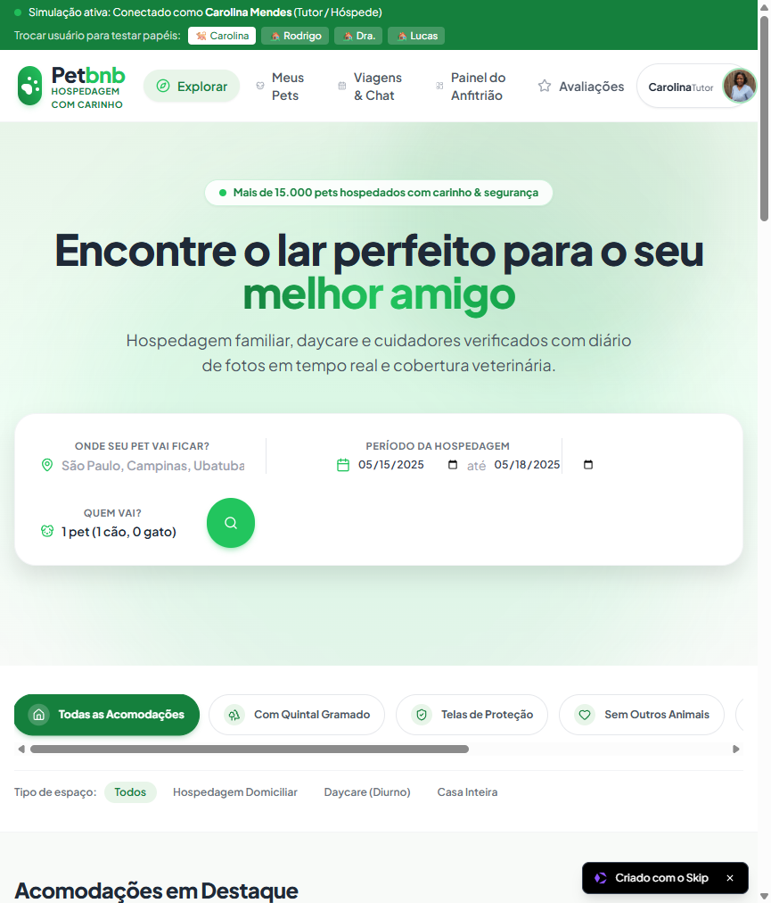
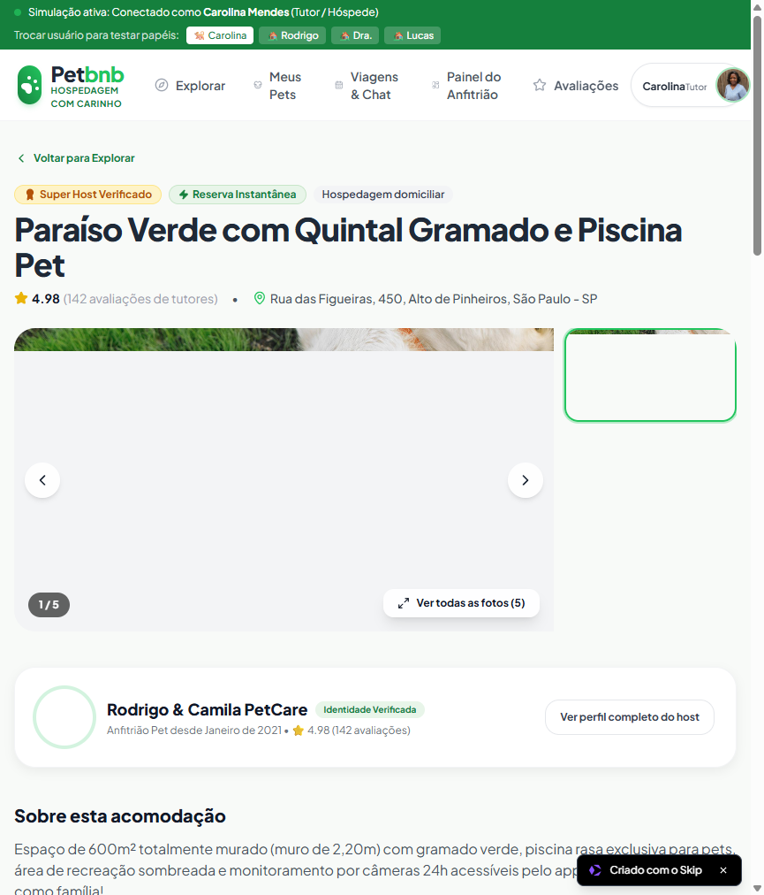
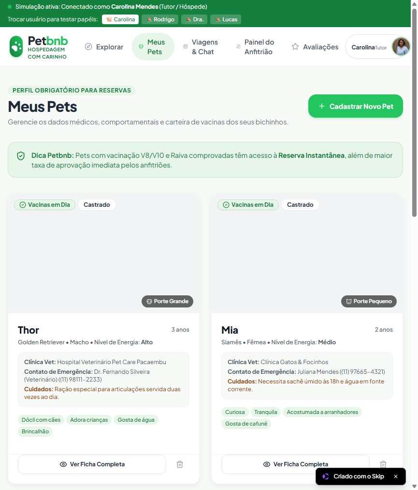
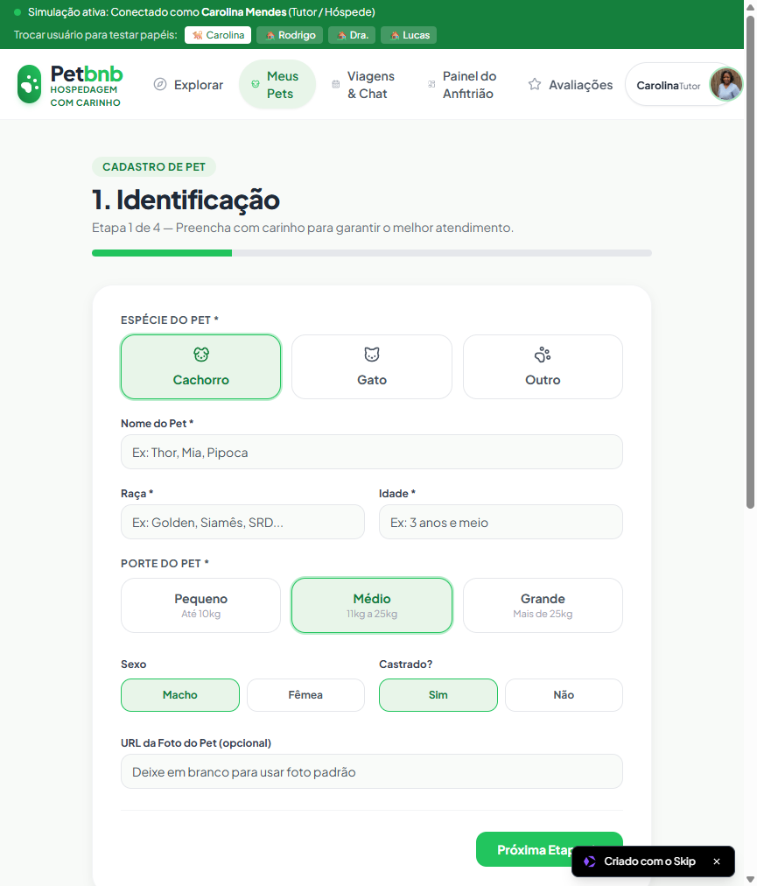
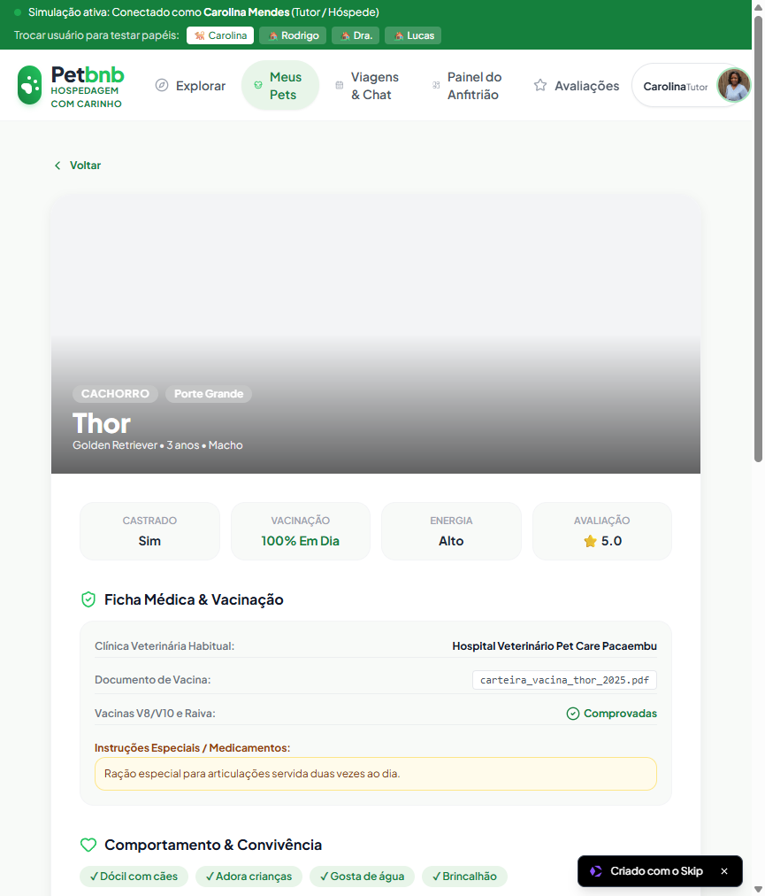
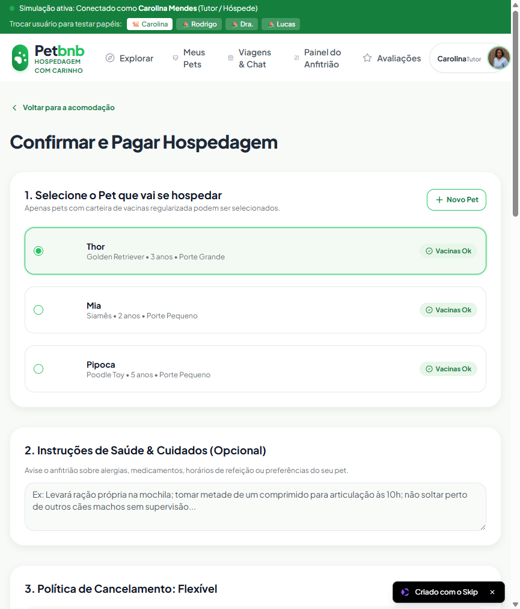
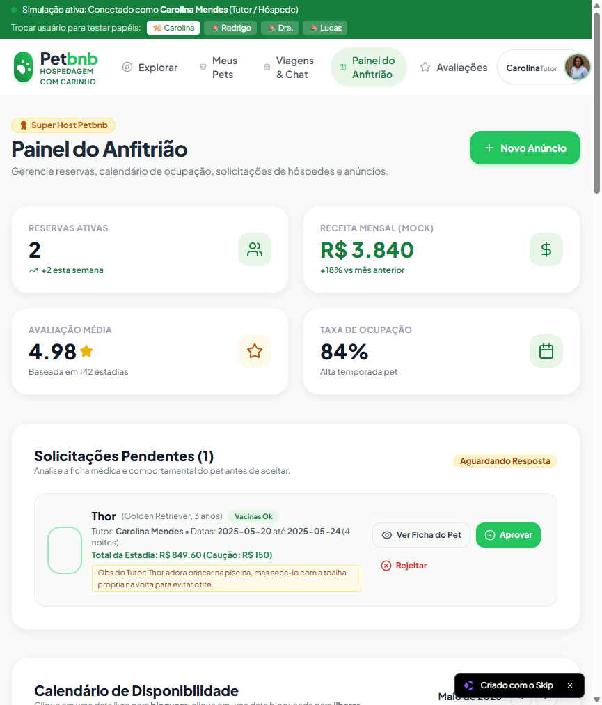
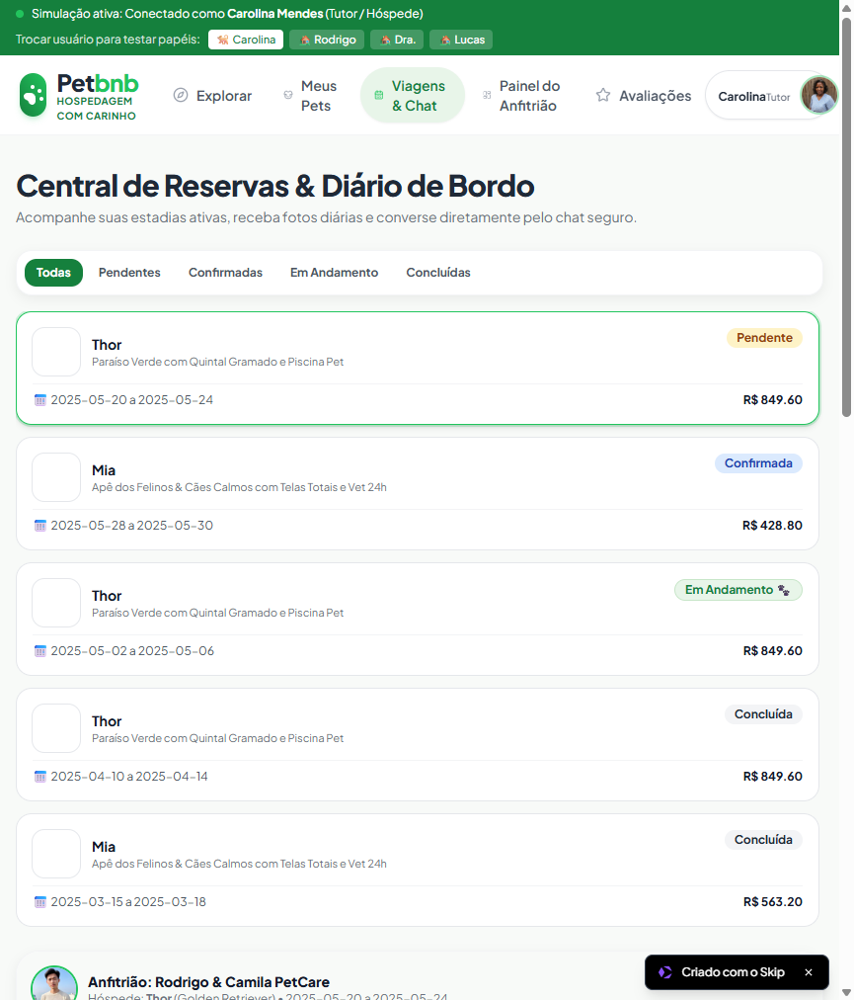
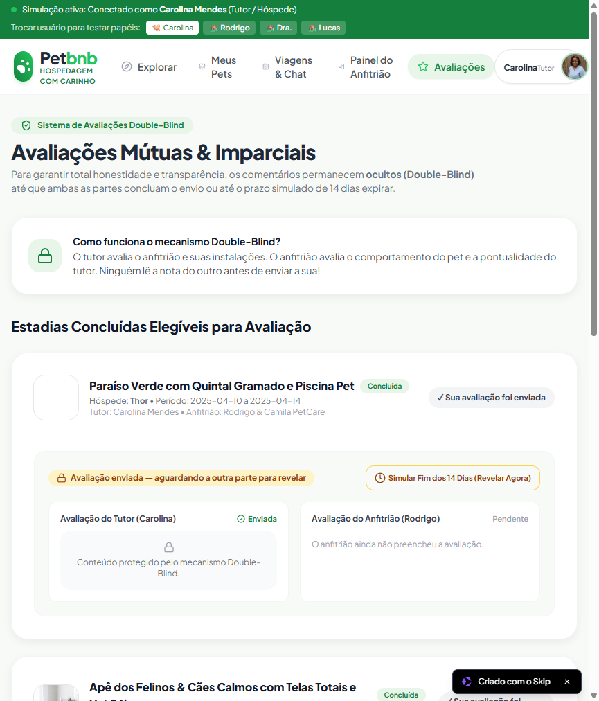

PETSTAY / Petbnb — Documentação Completa do Projeto
Marketplace estilo Airbnb para hospedagem e daycare de pets.
Documento para apresentação e implantação. Versão alinhada ao código do repositório.
| Campo | Valor |
|---|---|
| Nome do produto | PETSTAY (marca na UI: Petbnb) |
| Status atual | Fase 0 — Protótipo navegável (SPA + mocks) |
| Stack | React 19 · Vite 8 · TypeScript · Tailwind · Shadcn/Radix · React Router 7 |
| Repositório | petstay-airbnb-para-pets |
| Porta de desenvolvimento | http://localhost:8080 |
Sumário
- Sumário executivo
- Problema e proposta de valor
- Personas e papéis
- Arquitetura atual
- Modelo de domínio
- Mapa de telas e screenshots
- Jornadas do usuário
- Funcionalidades: implementado vs simulado
- Fases do projeto (roadmap)
- Implantação
- Requisitos não funcionais
- Riscos e mitigações
- Anexos
1. Sumário executivo
O PETSTAY (Petbnb) conecta tutores e anfitriões para hospedagem domiciliar, daycare e casas pet-friendly, com foco em segurança animal: perfil de saúde/comportamento do pet, regras de aceitação, Instant Book, chat, diário de bordo, check-in/out com caução e avaliações double-blind.
Estado do código: frontend SPA completo em UX, com estado em memória (DataContext + mockData). Não há backend, autenticação real, banco de dados nem gateway de pagamento. Ideal para demo de produto e validação de UX; as Fases 1–4 descrevem o caminho até produção.
2. Problema e proposta de valor
Problema
- Opções tradicionais (hotéis/creches) são caras e pouco transparentes.
- Pouca informação sobre compatibilidade comportamental e ambiente seguro (telas, quintal, outros animais).
- Comunicação fragmentada entre tutor e cuidador durante a estadia.
- Baixa confiança em avaliações unilaterais e ausência de trilha de cuidado (fotos, alimentação, medicação).
Proposta
| Capacidade | Benefício |
|---|---|
| Perfil completo do pet | Saúde, vacinas, comportamento, emergência |
| Anúncios com regras pet | Tamanhos aceitos, cercas, telas, Instant Book |
| Reserva com taxas claras | Diária, limpeza, taxa de serviço, caução |
| Chat + diário de bordo | Transparência durante a estadia |
| Check-in / check-out | Checklist e liberação de caução |
| Reviews double-blind | Confiança mútua tutor ↔ host |
3. Personas e papéis
Definidos em src/types/index.ts como UserRole:
| Papel | Responsabilidades | Status no código |
|---|---|---|
| Tutor | Cadastrar pets, buscar, reservar, chat, reviews | UI + mock |
| Host | Anúncios, aprovações, calendário, diário, check-in/out | UI + mock |
| Admin | Moderação, disputas, verificação | Apenas no tipo — sem tela |
Extras do modelo: isHostVerified, isSuperHost, rating e contagem de reviews.
A troca de papel na demo ocorre pelo banner de simulação no Layout (não é autenticação real).
4. Arquitetura atual
┌─────────────────────────────────────────┐
│ Browser (SPA React Router) │
│ pages/ + components/ + ui/ (Shadcn) │
└─────────────────┬───────────────────────┘
│
▼
┌─────────────────────────────────────────┐
│ DataContext (React Context + useState) │
│ actions: pets, bookings, chat, reviews │
└─────────────────┬───────────────────────┘
│
▼
┌─────────────────────────────────────────┐
│ mockData.ts (seed em memória) │
│ Refresh do browser → perde alterações │
└─────────────────────────────────────────┘
Estrutura de pastas (relevante)
petstay-airbnb-para-pets/
├── docs/
│ ├── PETSTAY-Documentacao.md ← este arquivo
│ └── screenshots/ ← capturas das telas
├── src/
│ ├── App.tsx ← rotas
│ ├── pages/ ← telas
│ ├── components/ ← Layout, SearchBar, ListingCard, ui/
│ ├── context/DataContext.tsx
│ ├── data/mockData.ts
│ ├── types/index.ts
│ └── lib/utils.ts
├── package.json
├── vite.config.ts ← porta 8080
└── README.md
Stack tecnológica
| Camada | Tecnologia |
|---|---|
| UI | React 19, TypeScript |
| Build | Vite 8 |
| Roteamento | react-router-dom v7 |
| Estilo | Tailwind CSS 3, tema verde (#22C55E), Plus Jakarta Sans |
| Componentes | Shadcn UI + Radix |
| Forms / validação | react-hook-form, Zod (disponíveis; várias telas usam useState) |
| Gráficos | Recharts |
| Qualidade | Oxlint, Oxfmt |
| Package manager | pnpm |
5. Modelo de domínio
Fontes: src/types/index.ts e seed em src/data/mockData.ts.
Entidades principais
| Entidade | Campos-chave |
|---|---|
| User | id, name, email, avatar, role, bio, phone, flags de host |
| Pet | espécie, porte, vacinas, comportamento, emergência, foto |
| Listing | tipo de espaço, preço, taxas, amenities, regras, Instant Book, calendário bloqueado |
| Booking | datas, totais, status, inspeções check-in/out |
| DailyLogEntry | humor, alimentação, medicação, passeios, foto |
| ChatMessage | tutor/host, texto, opcionalmente entrada de diário |
| DoubleBlindReview | notas tutor→host e host→tutor, revelação mútua |
Status de reserva
pending → confirmed → in_progress → completed (ou cancelled)
Tipos de espaço
- Hospedagem domiciliar
- Daycare (creche diurna)
- Casa inteira pet-friendly
Diagrama conceitual (ER simplificado)
erDiagram
User ||--o{ Pet : owns
User ||--o{ Listing : hosts
User ||--o{ Booking : tutors
Listing ||--o{ Booking : receives
Pet ||--o{ Booking : stays
Booking ||--o{ ChatMessage : has
Booking ||--o{ DailyLogEntry : has
Booking ||--o| DoubleBlindReview : evaluated_by
6. Mapa de telas e screenshots
Rotas definidas em src/App.tsx. Imagens em docs/screenshots/.
Como regenerar capturas: com o app em
http://localhost:8080, percorra as rotas abaixo e salve PNGs com os nomes indicados. Use o banner de simulação para alternar tutor ↔ host.
6.1 Home / Explorar — `/`
Arquivo: src/pages/Index.tsx
Screenshot: screenshots/01-home.png

Hero, busca (local, datas, cães/gatos), categorias pet e grid de anúncios.
6.2 Detalhe do anúncio — `/listings/:id`
Arquivo: src/pages/ListingDetails.tsx
Exemplo: /listings/list-1
Screenshot: screenshots/02-listing-details.png

Galeria, descrição, regras de aceitação, amenities, host e calculadora de preço / Instant Book.
6.3 Meus Pets — `/pets`
Arquivo: src/pages/PetsList.tsx
Screenshot: screenshots/03-pets-list.png

Listagem dos pets do tutor com acesso a detalhe e exclusão.
6.4 Cadastro de pet — `/pets/novo`
Arquivo: src/pages/NewPetForm.tsx
Screenshot: screenshots/04-new-pet.png

Wizard em 4 passos: identificação, saúde/vacinas, comportamento, emergência. Upload de carteira é simulado.
6.5 Detalhe do pet — `/pets/:id`
Arquivo: src/pages/PetDetails.tsx
Exemplo: /pets/pet-1
Screenshot: screenshots/05-pet-details.png

Perfil completo: saúde, tags de comportamento, contato de emergência.
6.6 Checkout — `/checkout/:id`
Arquivo: src/pages/Checkout.tsx
Exemplo: /checkout/list-1
Screenshot: screenshots/06-checkout.png

Seleção de pet, instruções de saúde, política de cancelamento e pagamento mock (cartão local).
6.7 Painel do anfitrião — `/host`
Arquivo: src/pages/HostDashboard.tsx
Screenshot: screenshots/07-host-dashboard.png

Aprovar/recusar reservas, calendário bloqueável, pausar anúncio, criar listing, receita mensal mock.
6.8 Viagens & Chat — `/reservations`
Arquivo: src/pages/ReservationsChat.tsx
Screenshot: screenshots/08-reservations-chat.png

Reservas por status, chat, diário de bordo, check-in com checklist e check-out com caução.
6.9 Avaliações — `/reviews`
Arquivo: src/pages/ReviewsPage.tsx
Screenshot: screenshots/09-reviews.png

Reviews tutor↔host com revelação apenas quando ambos enviam (ou simulação de timer).
Checklist de captura
| # | Arquivo | Rota | Status |
|---|---|---|---|
| 01 | 01-home.png |
/ |
Capturado |
| 02 | 02-listing-details.png |
/listings/list-1 |
Capturado |
| 03 | 03-pets-list.png |
/pets |
Capturado |
| 04 | 04-new-pet.png |
/pets/novo |
Capturado |
| 05 | 05-pet-details.png |
/pets/pet-1 |
Capturado |
| 06 | 06-checkout.png |
/checkout/list-1 |
Capturado |
| 07 | 07-host-dashboard.png |
/host |
Capturado |
| 08 | 08-reservations-chat.png |
/reservations |
Capturado |
| 09 | 09-reviews.png |
/reviews |
Capturado |
Capturas geradas com o app em execução (
viteemhttp://localhost:8081— a porta 8080 estava ocupada no ambiente de captura). Recapture se a UI mudar.
7. Jornadas do usuário
7.1 Tutor
Explorar (/) → Detalhe listing → Checkout → Reserva criada
→ Viagens & Chat → Check-in/out → Avaliações
Paralelo: Meus Pets → novo pet (wizard) → perfil do pet usado no checkout.
7.2 Anfitrião
Painel (/host) → Aprovar/recusar pending → Bloquear datas
→ Durante estadia: diário + check-in/out
→ Avaliar pet/tutor (double-blind)
7.3 Regras de negócio já refletidas na UI
- Instant Book vs aprovação manual (critérios de vacina/rating do pet).
- Composição de preço: diária × noites + limpeza + % serviço + caução.
- Políticas: Flexível · Moderada · Rigorosa.
- Features pet: quintal, telas, piscina pet, câmeras, sem outros animais, vet próximo, etc.
- Status do listing:
active|paused.
8. Funcionalidades: implementado vs simulado
Implementado (UI + lógica em memória)
- Busca/filtro de listings
- Detalhe com galeria, regras e preço
- Cadastro multi-step de pet
- Listar / ver / excluir pets
- Checkout com seleção de pet e cartão mock
- Fluxo Instant Book →
confirmedoupending - Host: aprovações, calendário, listings, receita mock
- Chat por booking + auto-reply simulado
- Diário de bordo, check-in e check-out
- Reviews double-blind + simulação de revelação
- Troca tutor/host via banner de simulação
Placeholders / não reais
| Item | Situação |
|---|---|
| Auth / login | UI decorativa; sem sessão real |
| Pagamentos | Cartão validado localmente; sem gateway |
| Upload de arquivos | Nome de arquivo simulado |
| Persistência | Sem localStorage/API — refresh limpa estado |
| Admin | Sem rota ou fluxo |
| Mapas / geo | Ausente |
| Notificações e-mail/SMS/push | Ausente |
| Testes automatizados | Script test é stub |
| CI/CD e Docker | Ausentes |
9. Fases do projeto (roadmap)
Fase 0 — Protótipo / demo *(atual)*
Objetivo: validar UX e storytelling do marketplace pet.
Entregas
- SPA com 9 rotas principais
- Modelo de domínio tipado
- Simulação tutor ↔ host
- Fluxos de reserva, chat, diário e reviews na UI
Critério de aceite: demo ao vivo cobrindo jornada tutor e host.
Fase 1 — Fundação de produto
Objetivo: transformar o protótipo em base persistente e autenticada.
Entregas
- Auth real (e-mail e/ou OAuth) + sessão
- Backend + Postgres (ex.: Supabase ou Neon) mapeando
types/index.ts - Persistência de users, pets, listings, bookings, messages, reviews
- Remoção do banner de simulação; papéis vindos do token/sessão
- Variáveis por ambiente:
.env-dev,.env-homolog,.env-prod - Autorização por papel (tutor / host; admin preparado)
Critério de aceite: refresh mantém dados; login real; CRUD básico via API.
Fase 2 — Marketplace operacional
Objetivo: operação diária sem mocks de mídia e disponibilidade.
Entregas
- CRUD completo de listings com storage de fotos
- Calendário e disponibilidade no servidor
- Instant Book e regras de elegibilidade no backend
- Chat persistente (Realtime)
- Upload real de carteira de vacinas e fotos do pet
- Newsletter / e-mail transacional básico (opcional nesta fase)
Critério de aceite: dois usuários reais concluem uma reserva ponta a ponta em homologação.
Fase 3 — Pagamentos e confiança
Objetivo: monetização segura e governança.
Entregas
- Gateway (ex.: Stripe Connect) + caução
- Webhooks, reembolsos e políticas de cancelamento efetivas
- Verificação de hosts (
isHostVerified) - Painel admin (moderação, disputas, denúncias)
- Auditoria de eventos financeiros
Critério de aceite: pagamento teste em sandbox; disputa resolvida no admin; caução liberada no check-out.
Fase 4 — Escala e polish
Objetivo: crescimento, qualidade e canais adicionais.
Entregas
- Notificações (push / e-mail / SMS)
- Busca geográfica e mapas
- Revelação automática de reviews por timer em produção
- Testes (unitários, integração, E2E das jornadas críticas)
- Monitoramento, alertas e backups
- PWA ou app mobile, se priorizado
Critério de aceite: SLOs definidos; cobertura mínima de testes nas jornadas tutor/host; deploy automatizado.
Visão consolidada das fases
flowchart LR
F0[Fase 0 Protótipo UI] --> F1[Fase 1 Auth + DB]
F1 --> F2[Fase 2 Marketplace real]
F2 --> F3[Fase 3 Pagamentos + Admin]
F3 --> F4[Fase 4 Escala + Qualidade]
10. Implantação
10.1 Pré-requisitos
- Node.js 18+
- pnpm (recomendado; o repo possui
pnpm-lock.yaml) - Git
10.2 Ambiente local (Fase 0)
# Na raiz do repositório
pnpm install
pnpm start
# Aplicação em http://localhost:8080
Scripts úteis:
| Script | Comando | Descrição |
|---|---|---|
| Dev | pnpm start ou pnpm dev |
Servidor Vite |
| Build prod | pnpm run build |
Saída em dist/ |
| Build dev | pnpm run build:dev |
Saída em dev-dist/ |
| Preview | pnpm run preview |
Serve a build localmente |
| Lint | pnpm run lint |
Oxlint |
| Format | pnpm run format |
Oxfmt |
Nota: o
README.mdainda mencionalocalhost:5173; a configuração real emvite.config.tsusa a porta 8080.
10.3 Variáveis de ambiente
Hoje (Fase 0): nenhuma VITE_* obrigatória para rodar o front.
A partir da Fase 1 (sugerido):
| Variável | Ambiente | Uso |
|---|---|---|
VITE_API_URL / DATABASE_URL |
todos | API ou connection string (servidor) |
VITE_SUPABASE_URL |
client | URL do projeto |
VITE_SUPABASE_ANON_KEY |
client | Chave pública |
| Secrets de service role / Stripe | somente servidor | Nunca no bundle do front |
Arquivos sugeridos (sem commitar segredos): .env-dev, .env-homolog, .env-prod.
10.4 Deploy do front atual (SPA estática)
pnpm run build→ pastadist/- Publicar
dist/em Vercel, Netlify, Cloudflare Pages, S3+CloudFront ou similar - Configurar SPA fallback: todas as rotas →
index.html - Domínio customizado + HTTPS
- Smoke test: abrir
/,/host,/reservations, deep link/listings/list-1
Exemplo de ideia de config Vercel (vercel.json — a criar na Fase 0/1 de deploy):
{
"rewrites": [{ "source": "/(.*)", "destination": "/index.html" }]
}
10.5 Pipeline de implantação alvo (Fases 1–3)
- Provisionar banco (Supabase/Neon) e migrations das entidades
- Configurar Auth + políticas RLS / autorização por papel
- Storage para fotos e carteiras de vacina
- API (REST/RPC/Edge Functions) alinhada ao
DataContextatual - Stripe (ou similar) + webhooks em homolog e produção
- CI: lint → typecheck → build → testes → deploy
- Deploy Homolog → smoke test das jornadas → Produção
- Monitoramento (erros, uptime) e backups do banco
10.6 Checklist pós-deploy (Fase 0)
- Home carrega e lista anúncios mock
- Detalhe de listing e checkout abrem sem 404
- Troca de papel no banner funciona
- Host consegue aprovar reserva pending
- Chat e reviews renderizam
- Build
dist/serve corretamente com rewrite SPA
11. Requisitos não funcionais
| Área | Diretriz |
|---|---|
| Segurança | Validação de entrada (Zod), auth nas fases seguintes, HTTPS, sem secrets no client |
| LGPD | Minimizar dados sensíveis do pet/tutor; consentimento; exclusão sob demanda |
| Performance | CDN para assets; lazy load de imagens; code-splitting quando o bundle crescer |
| Disponibilidade | Health checks do API/DB a partir da Fase 1; status page opcional |
| Manutenibilidade | Páginas por domínio, types centralizados, UI Shadcn; arquivos > 300 linhas devem ser divididos |
| Acessibilidade | Componentes Radix; navegação por teclado; contraste adequado |
12. Riscos e mitigações
| Risco | Impacto | Mitigação |
|---|---|---|
| Protótipo sem persistência | Demo ≠ produto | Priorizar Fase 1 |
| Pagamento e caução | Financeiro / confiança | Stripe + webhooks + auditoria (Fase 3) |
| Confiança tutor ↔ host | Churn / incidentes | Verificação, reviews, admin, diário |
| Dados de saúde do pet | Privacidade | Minimização, consentimento, RLS |
| Drift doc ↔ código | Apresentação desatualizada | Atualizar screenshots e este MD a cada release de fase |
13. Anexos
A. Rotas oficiais
| Rota | Página |
|---|---|
/ |
Index |
/pets |
PetsList |
/pets/novo |
NewPetForm |
/pets/:id |
PetDetails |
/listings/:id |
ListingDetails |
/checkout/:id |
Checkout |
/host |
HostDashboard |
/reservations |
ReservationsChat |
/reviews |
ReviewsPage |
* |
NotFound |
B. IDs úteis do mock (demo)
| Tipo | IDs |
|---|---|
| Users | user-tutor-1, user-host-1, user-host-2, user-host-3 |
| Pets | pet-1, pet-2, pet-3 |
| Listings | list-1 … list-6 |
| Bookings | book-pending-1, book-confirmed-1, book-in-progress-1, book-completed-1, book-completed-2 |
C. Manutenção da documentação (fonte única)
Fonte de verdade: docs/PETSTAY-Documentacao.md
Artefatos gerados: docs/PETSTAY-Apresentacao.html (e opcionalmente .pdf)
# Após editar este Markdown:
pnpm docs:build # regenera o HTML de apresentação
pnpm docs:pdf # regenera HTML + PDF (Chrome/Edge headless)
pnpm docs # alias de docs:pdf
Template visual: docs/templates/apresentacao-shell.html + apresentacao.css
Script: scripts/generate-docs.mjs
Exportar PDF pela UI: abra PETSTAY-Apresentacao.html → botão Exportar PDF → Destino: Salvar como PDF → ative Gráficos de segundo plano.
Compartilhar com a equipe: pasta docs/ (HTML + screenshots/) ou só o PDF.
D. Glossário rápido
| Termo | Significado |
|---|---|
| Instant Book | Reserva confirmada automaticamente se regras forem atendidas |
| Double-blind | Avaliações só reveladas após ambos enviarem (ou timer) |
| Caução | Valor retido e liberado no check-out se tudo ok |
| Daycare | Creche diurna (sem pernoite) |
| SuperHost | Flag de destaque do anfitrião no modelo |
Análise de escalabilidade e manutenibilidade
Esta documentação separa o estado atual (Fase 0) do caminho de produto (Fases 1–4). O Markdown é a fonte única; o HTML/PDF são regenerados com pnpm docs:build / pnpm docs:pdf, eliminando drift manual entre formatos. Screenshots em docs/screenshots/ e o modelo em src/types/index.ts devem ser revisados a cada release de fase.
Próximos passos: (1) recapturar telas após mudanças visuais relevantes; (2) na Fase 1, anexar schema SQL e diagrama de sequência de reserva; (3) no CI, rodar pnpm docs:build e (opcional) Playwright para smoke das rotas + screenshots.
Documento gerado para o projeto PETSTAY / Petbnb. Atualize a tabela de screenshots e o status das fases conforme o avanço do time.